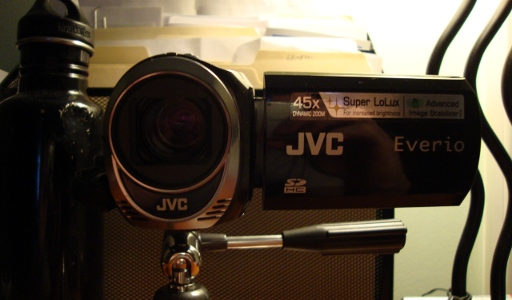
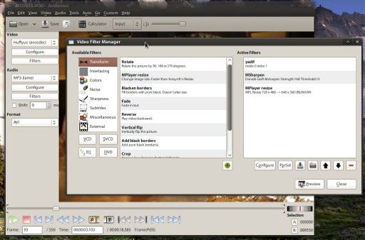

JVC Everio GZ-MS110, Ubuntu 10.04 and AviDemux
[Category: Hardware and Electronics] [link] [Date: 2011-02-09 23:12:00]
Last summer I purchased a webcam from Best Buy and quickly found myself generally appalled at the quality. I wish I had known then, but the best bet nowadays for creating quick videos is likely a camcorder. Once I had come to realize this, I started keeping an eye out for cheap camcorders. I lost interest until recently, when I decided that I would need one to enter a contest that involves the submission of a two minute video. After a week of research I had gotten nowhere. Every camera I would find would have the same average weighted rating which fell somewhere between amazing and desperately inadequate. I gave up and just decided to choose a camera that had the features I needed and go from there. I'm not making the next Avatar here.
I eventually found a JVC Everio GZ-MS110 that was on sale for $130. It had the basic feature set that I wanted including a time lapse function and the ability to swap out SD cards. I purchased it at a local HHGregg (first item I ever purchased from this store -- I have no complaints). I'm not going to thoroughly review this camera, but I do want to go over a few tricks to get better video output from these cheap camcorders on Linux (though the same techniques should apply to other operating systems).

It's not much to look at, but it's as compact and light as they comeThe most annoying aspect of nearly all camcorders that aren't HD ready is that they will, almost without doubt, not support recording progressive scan video. Deinterlacing becomes a must when dealing with video from these sources. The second peeve I have is that they can't seem to use logical storage formats and containers. JVC cameras create MOD and TOD files which are truly MPEG2 data with AAC audio, but a lot of lesser video players struggle with them. It appears that the way their header data is stored all but hides the aspect ratio the file was recorded with (with the GZ-MS110 you can choose 4:3 or 16:9) which causes many players to display the file incorrectly. Luckily, most media programs on Linux have some relation to ffmpeg or gstreamer, both of which seem to read these files properly. I had no issue transferring these files. I tested the mini-USB port on the camera and Ubuntu 10.04 recognized the device as a MSC controller giving me access to the files. I also was able to simply remove the SD card and read the data that way. I enjoy devices that work simply like this, which is why I also enjoy my Creative Zen X-FI 2.
Rather than go through the motions of explaining how I process the video from this camcorder with long ffmpeg commands, I thought I'd show how to do it using AviDemux. This is useful if your goal is to put these videos onto sharing sites like Facebook, YouTube, or Vimeo as well as if you are looking to do some basic editing with the output. If you're on Ubuntu, you can get it through the software, if you're on a Debian-based distribution you can likely get it using the following in a terminal:
$ sudo apt-get install avidemux
{kind=link}

Quick overview of some settings to get clear output from AviDemuxAviDemux will read the MOD files and build an index of the frames (click yes when it asks). For my purposes, I plan to edit the clips on my computer and have chosen to use a lossless video codec (Huffyuv). Unfortunately, AviDemux does not currently have FLAC support which would be my choice for audio. I lowered myself to use a very high quality MP3 since it's very compatible with most programs. You could choose to use a PCM waveform as well. If you need the file size to be smaller, I suggest using an XviD or H.264 profile. The important part happens with the filters. The order of these are important. The first filter I use is the yadif filter (Yet Another DeInterlace Filter), followed by a sharpen, and then a resize down to 640x360. This resize is not necessary and many would say that I am degrading the quality by doing so. I find that the bilinear re-sampling actually removes a lot of noise from the output.
{kind=link}
{kind=link}
I am satisfied with the results. For only twice as much as I paid for a webcam I have made leaps and bounds in terms of quality. Not to mention it's a lot easier to interface with. Other comments on the camera: The sound recording on it is better than I anticipated and it handled loud music in a car easily -- this camera may be a good investment for concert filmers. The battery on it lasts only an hour, despite claims of lasting up to two. I have lowered the LCD brightness as much as possible with little gain in recording time. Some quick research showed that an extra battery was -- at the cheapest -- $60! That's nearly half the price of the camera. In conclusion, the JVC Everio GZ-MS110 is definitely a budget standard definition camera, but I can't see why most users wouldn't find it a good deal for the prices it is available for. If you don't need zoom and time lapse capabilities, the Flip Ultra HD is by far one of the best camcorders for online socialites interested in posting videos onto YouTube and Facebook.